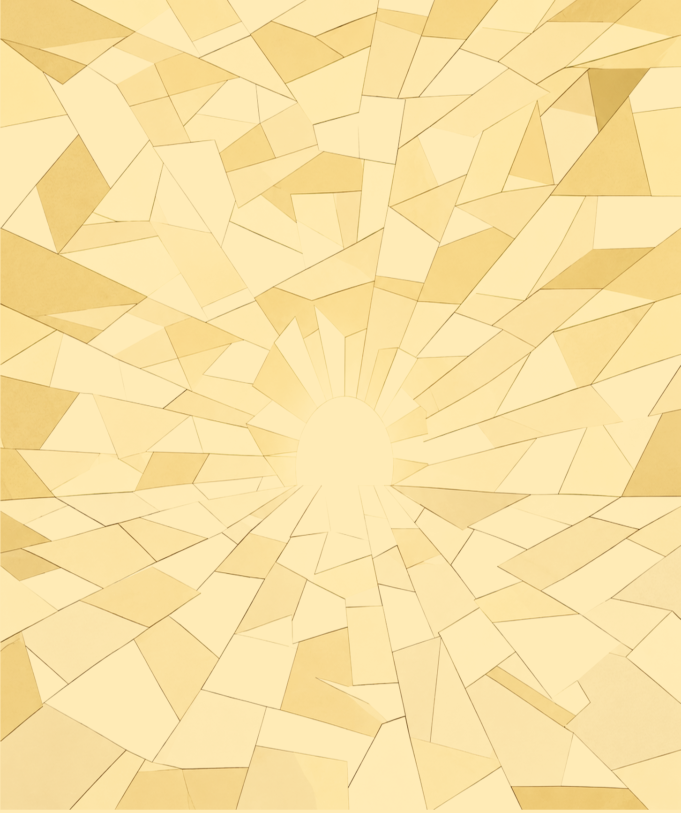
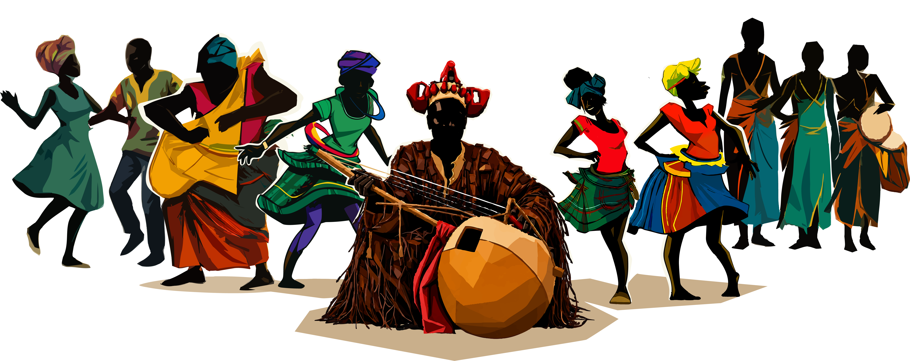
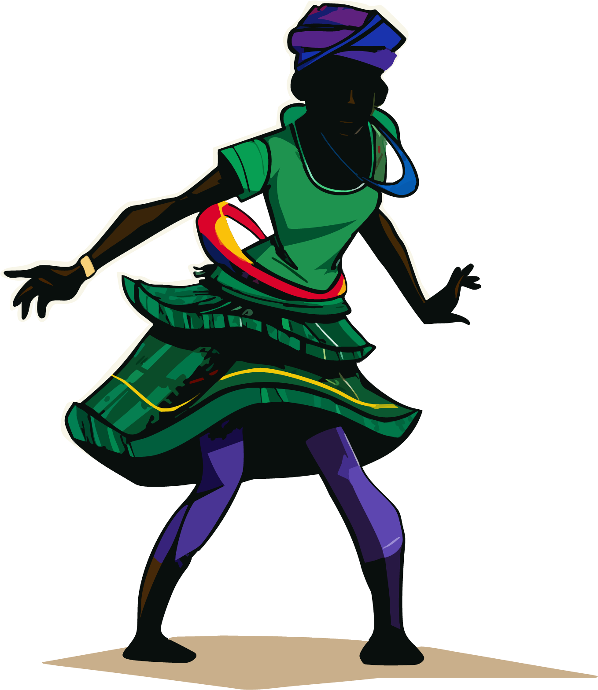
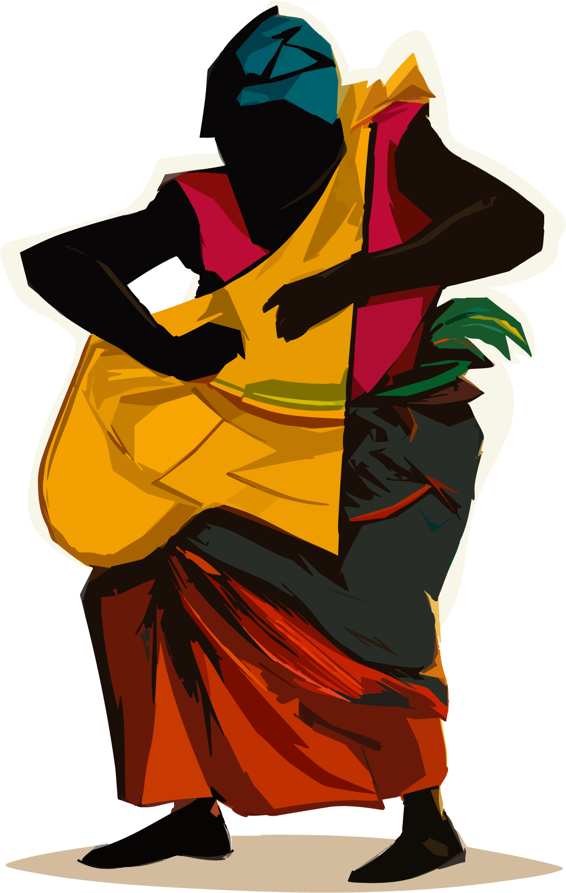
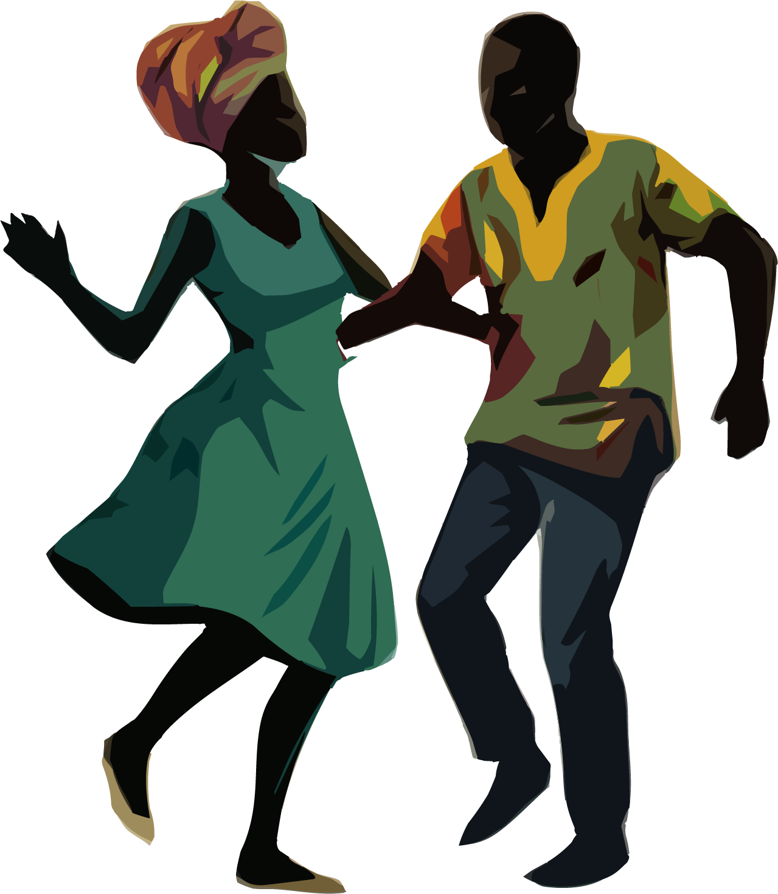
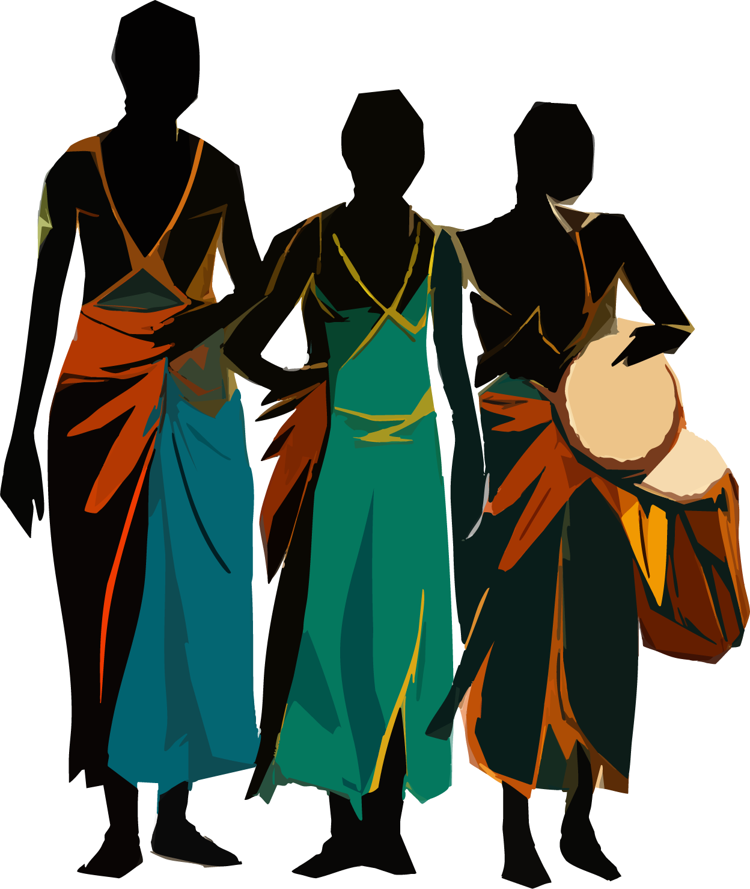
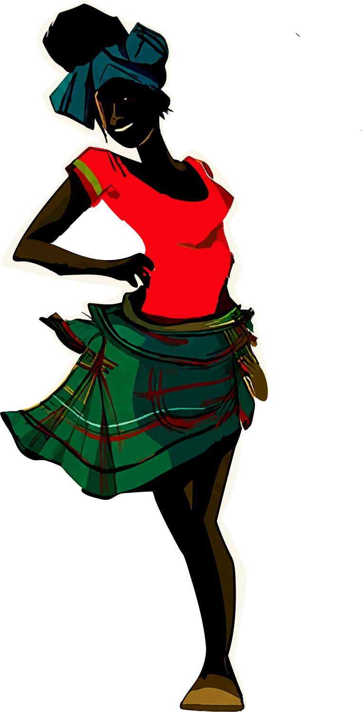
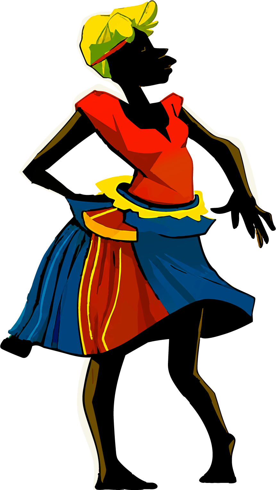

Notre culture prend vie.
Deux jours pour entrer dans le Village du Griot : contes, danses, jeux, musique et mémoire. Le Congo se raconte par les Congolais.


La mémoire orale ne doit pas s'éteindre.
Griot Sambolé rend au griot son rôle de gardien de la mémoire, de transmetteur et de témoin de son époque.
Lire notre mission →Le Village du Griot
Pas un spectacle : un village. On y joue, on y mange, on y danse, on y écoute. Chaque allée est une porte d'entrée dans une pratique vivante.



Le Village du Griot
Chaleureux, familial, coloré. Les enfants jouent, les aînés racontent, les artisans travaillent à ciel ouvert.


De la mémoire des ancêtres à celle du peuple
La nuit tombe et le village devient scène. Récit, musique, performance et lumière racontent une même histoire.
Le carnet de récits
Huit récits fondateurs racontés sur scène, en atelier et en illustration. Clique sur un récit pour le lire.


Une mémoire se protège.
Une histoire se raconte.